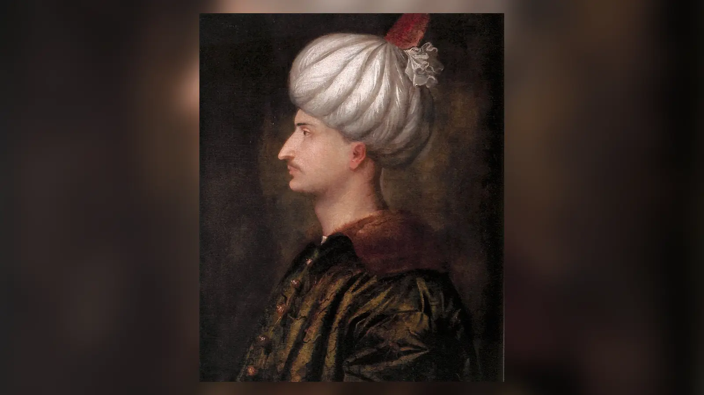
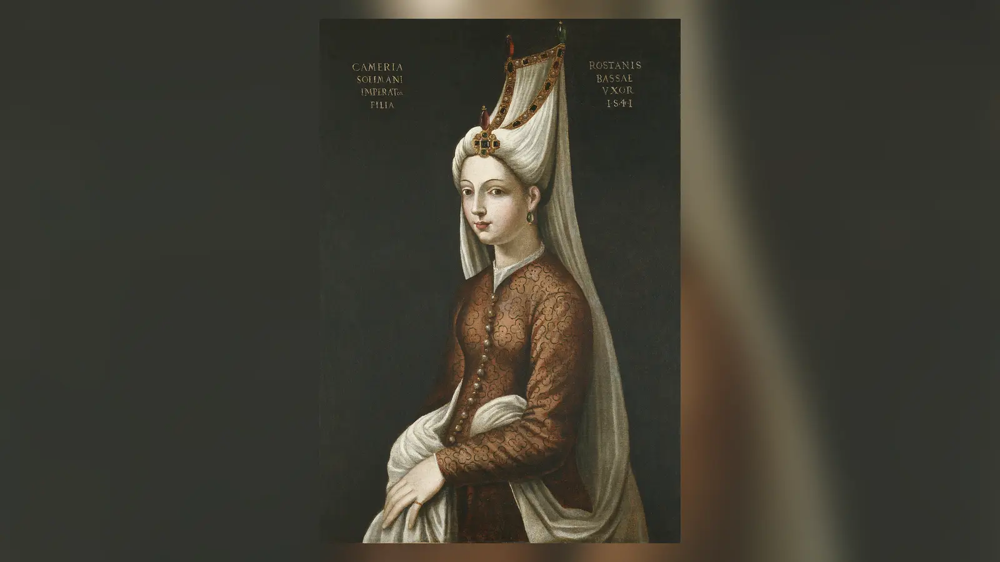
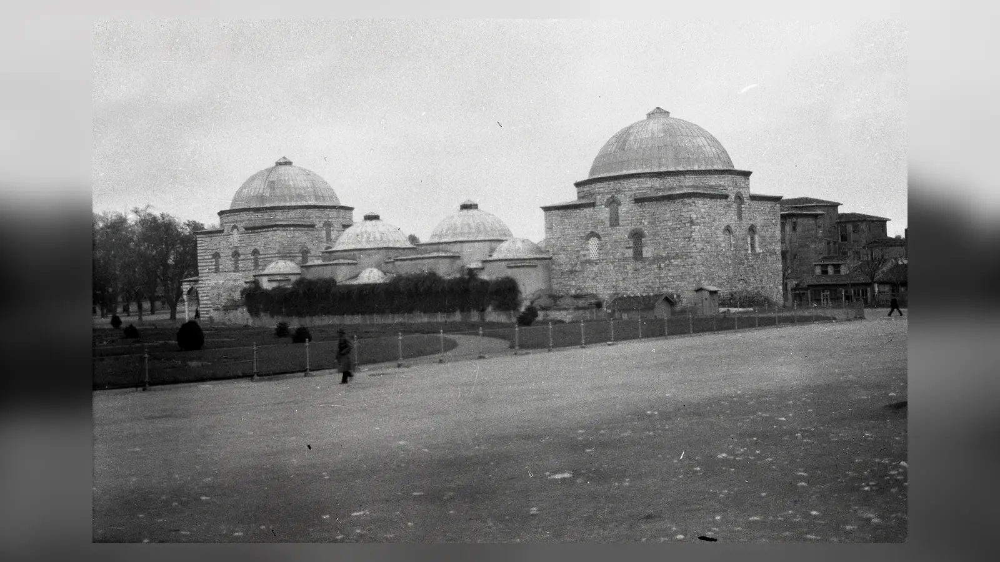

Bir cariyenin Osmanlı sarayına girdikten sonra hükümdarın nikâhlı eşi hâline gelmesi, birden fazla şehzadenin annesi olması, yabancı hükümdarlarla yazışması, imparatorluğun farklı şehirlerinde büyük vakıflar kurması ve sonunda “devleti perde arkasından yöneten kadın” olarak hatırlanması başlı başına sıra dışı bir hikâyedir. Hürrem Sultan’ın hayatını çekici kılan da budur. Fakat bu hikâyenin çekiciliği, tarihsel soruyu kolaylaştırmak yerine zorlaştırır. Çünkü “Hürrem Osmanlı’yı yönetti” cümlesi, birbirinden farklı güç biçimlerini tek bir fiilin içine sıkıştırır. Divanda resmî yetki kullanmakla padişahın güvenine sahip olmak, dış politika kararı vermekle diplomatik yazışma yürütmek, bir şehzadenin geleceğini savunmakla devletin bütün karar mekanizmasını kontrol etmek aynı şey değildir.
Hürrem’in siyasi gücünü anlamak için önce bu ayrımı korumak gerekir. Onun sadrazamlık, naiplik veya Divan-ı Hümayun üyeliği gibi bir makamı yoktu. Ordunun başkomutanı değildi, devletin kanunlarını tek başına belirlemiyor, vezirleri resmî hiyerarşi dışında doğrudan yönetmiyordu. Buna karşılık Osmanlı siyasetinin yalnız resmî makamların toplamından ibaret olmadığı da açıktır. Hanedan, saray haneleri, evlilikler, patronaj ilişkileri, şehzadelerin çevreleri ve hükümdara erişim, kararların oluştuğu siyasi dünyanın parçalarıydı. Hürrem’in gücü tam burada belirginleşti: Devlet aygıtının başına geçmedi, fakat hükümdara ve hanedanın geleceğine olağanüstü yakın bir konum elde etti.
Bu nedenle asıl soru “Hürrem güçlü müydü?” değildir; güçlü olduğu konusunda yeterince işaret vardır. Daha zor soru, bu gücün niteliğidir. Belgeler onun hangi kararları gerçekten etkilediğini, hangi olaylarda yalnız çıkar sahibi olduğunu ve hangi suçlamaların sonraki anlatılar tarafından büyütüldüğünü her zaman aynı açıklıkta göstermez. Hürrem’in tarihini doğru okumak, hem onu “büyüyle Kanuni’yi kontrol eden entrikacı” klişesinden hem de bütün siyasi sorumluluğu elinden alınmış romantik bir aşk kahramanı imgesinden çıkarmayı gerektirir.
Hürrem Sultan’ın Saraya Gelişi ve Yükselişi
Hürrem’in saraya gelmeden önceki hayatı hakkında kesin bilgiler şaşırtıcı derecede azdır. Batılı kaynaklarda “Roxelana”, “Rossa”, “Roxelane” gibi adlarla anılması onun Ruthenia ile ilişkilendirildiğini gösterir. Günümüzde Ukrayna sınırları içinde kalan Rohatyn çevresi sıkça doğum yeri olarak gösterilir. Aleksandra Lisowska veya Anastasia gibi isimler de modern anlatılarda yaygındır; ancak bunları tartışmasız doğum adı olarak kabul ettirecek çağdaş ve kesin bir belge yoktur. Bu belirsizlik önemlidir, çünkü Hürrem’in saray öncesi hayatı sonraki yüzyıllarda boşlukların efsanelerle doldurulduğu alanlardan biri olmuştur.
Muhtemelen Tatar akınları ve köle ticareti ağı içinde esir edilerek Osmanlı dünyasına getirildi ve imparatorluk haremine girdi. “Hürrem” adı neşeli, güler yüzlü anlamıyla ilişkilidir. Saraya ne zaman ve hangi aracılar üzerinden girdiğinin ayrıntıları kesin değildir. Bildiğimiz şey, Kanuni Sultan Süleyman’ın 1520’de tahta çıkışından sonraki ilk yıllarda onun gözdesi hâline geldiği ve kısa süre içinde hükümdardan birden fazla çocuk dünyaya getirdiğidir. Şehzade Mehmed, Mihrimah Sultan, erken yaşta ölen Abdullah, Selim, Bayezid ve Cihangir bu ilişkinin hanedan siyasetindeki ağırlığını giderek artırdı.
Bu yükselişi yalnız fiziksel güzellik veya “Kanuni’nin büyük aşkı” ile açıklamak yetersizdir. Harem, dışarıdan bakıldığında kapalı bir özel alan gibi görünse de kendi eğitim, hizmet, hiyerarşi ve patronaj düzenine sahipti. Hükümdarın yakınında kalabilmek yalnız ilk dikkati çekmekle değil, saray kültürüne uyum, güven, iletişim ve hanedan için çocuk sahibi olmakla da ilgiliydi. Hürrem’in uzun yıllar boyunca Süleyman’ın en yakın eşlikçisi olarak kalması, ilişkinin geçici bir gözdelikten daha kalıcı bir ortaklığa dönüştüğünü gösterir.
Onun birden fazla erkek çocuk doğurması ayrıca önemlidir. Osmanlı hanedanında önceki dönemlerde bir cariyenin bir erkek çocuk doğurduktan sonra cinsel birlikteliğinin sona ermesi ve oğlunun geleceğine odaklanması yönünde güçlü bir saray uygulaması gelişmişti. Fakat bu, her çağda istisnasız uygulanan yazılı bir anayasa maddesi değildi. Hürrem’in Süleyman’dan art arda oğullar sahibi olması yine de dönemin yerleşik hanedan pratiklerinden belirgin bir sapmaydı. Bu sapma, yalnız Hürrem’in kişisel yükselişini değil, Kanuni döneminde hanedan ailesinin örgütlenişinde başlayan daha geniş dönüşümü de haber veriyordu.
Kanuni Sultan Süleyman ile Evliliği Neden Sıra Dışıydı?
Hürrem ile Süleyman arasındaki nikâhın kesin tarihi konusunda kaynaklar tam bir birlik göstermez. Genellikle 1530’ların ilk yarısı üzerinde durulur. Tarih tartışmalı olsa da olayın kendisi siyasi bakımdan önemlidir. Osmanlı hükümdarları daha erken yüzyıllarda hanedanlar arası evlilikler yapmıştı; dolayısıyla “Osmanlı padişahları asla evlenmezdi” cümlesi doğru değildir. Ancak 15. yüzyılın sonlarından 16. yüzyıla gelindiğinde hanedanın üreme düzeninde cariyelik sistemi belirginleşmiş, hükümdarın bir cariyeyi azat edip nikâhlı eş hâline getirmesi yerleşik pratiğin dışında kalmıştı.
Nikâh Hürrem’in konumunu yalnız duygusal açıdan değil, hanedan içindeki statüsü bakımından da değiştirdi. Haseki unvanıyla ve hükümdarın nikâhlı eşi olarak sarayda sürekliliği arttı. Daha önce şehzade annelerinin oğulları sancaklara çıktığında onlarla birlikte taşraya gitmesi beklenirken Hürrem İstanbul’da ve hükümdara yakın kaldı. Oğullarının birden fazla olması da eski düzenin “anne ile tek şehzadenin siyasi kader birliği” modelini karmaşıklaştırdı. Hürrem artık yalnız bir şehzadenin annesi değil, hanedanın geleceğinde birden fazla adayın annesiydi.
Bu değişim, onun gücünün neden sadece “Kanuni onu seviyordu” cümlesiyle açıklanamayacağını gösterir. Sevgi ve bağlılık elbette kaynaklarda izlenebilir; fakat evlilik, çocuklar ve sarayda kalıcılık Hürrem’i hükümdarın özel hayatındaki kişiden hanedan siyasetinin sürekli aktörüne dönüştürdü. Osmanlı sisteminde hükümdarın ailesinin geleceği doğrudan devletin geleceğiyle bağlantılı olduğundan, hanedan içindeki bu konum kaçınılmaz biçimde siyasi sonuçlar doğuruyordu.
Yine de nikâhı bir “eş hükümdarlık” ilanı gibi okumak yanlıştır. Hürrem’e nikâhla birlikte Divan’da oy hakkı, ferman çıkarma yetkisi veya askerî komuta verilmedi. Onun güçlenmesi resmî görev tanımının genişlemesiyle değil, hükümdara erişiminin ve hanedan içindeki vazgeçilmezliğinin artmasıyla gerçekleşti. Hürrem örneğinin tarihsel önemi de tam olarak burada yatar: Osmanlı’da etkili olmak için her zaman resmî bir makam sahibi olmak gerekmiyordu.
Hürrem Sultan’ın Gerçek Yetkileri Nelerdi?
16. yüzyıl Osmanlı yönetimi tek kişinin çevresinde rastgele işleyen bir saray sistemi değildi. Padişah egemenliğin merkezindeydi; fakat kararların hazırlanması ve uygulanması Divan-ı Hümayun, sadrazam, vezirler, kazaskerler, defterdarlar, nişancı, şeyhülislam, saray görevlileri ve geniş askerî-idari bürokrasi üzerinden yürüyordu. Eyalet yöneticileri, sancak beyleri, kapıkulu teşkilatı ve ulema da devletin işleyişinde rol sahibiydi. Hürrem bu resmî hiyerarşide sadrazam veya divan üyesi değildi.
Bu nokta “Osmanlı’yı yönetti” iddiasının sınırını çizer. Hürrem adına yürüyen bağımsız bir yürütme organı, onun başkanlık ettiği bir divan veya padişahın yerine genel karar verdiğini gösteren bir naiplik düzeni yoktur. Kanuni’nin uzun saltanatı boyunca devletin nihai hükümdarı Süleyman’dı. Onu Hürrem’in iradesiz kuklası olarak göstermek, yalnız Hürrem’in gücünü abartmak değil, Kanuni’nin onlarca yıllık siyasi sorumluluğunu da tarih dışına itmek olur.
Fakat resmî yetkinin yokluğu, siyasi etkinin yokluğu değildir. Padişaha düzenli ve mahrem erişim, hükümdarın güvenini kazanmak, saraydaki gelişmeleri ona aktarabilmek, belirli kişilerin lehinde veya aleyhinde kanaat oluşturabilmek ve hanedan mensupları arasında aracılık yapmak gerçek bir nüfuz yaratabilirdi. Hürrem’in mektupları, diplomatik temasları, damadı Rüstem Paşa ve kızı Mihrimah Sultan ile ilişkileri bu nüfuzun farklı kanallarını gösterir.
Burada “yönetmek” ile “kararın oluştuğu çevreyi etkileyebilmek” arasındaki fark belirleyicidir. Hürrem’in tarihsel gücü, emir-komuta zincirinin tepesinde ikinci bir hükümdar olmasından değil, padişaha ulaşmanın son derece değerli olduğu bir sistemde olağanüstü erişime sahip olmasından doğuyordu. Bu erişim bazen bir ricayı, bazen bir bilgiyi, bazen bir kişinin kariyerini ve en önemlisi şehzadelerin geleceğine ilişkin hükümdar algısını etkileyebilirdi. Etki, kararın kendisi değildi; ama kararın öncesindeki siyasi alanın bir parçasıydı.
Kanuni’ye Gönderdiği Mektuplar Ne Anlatıyor?

Hürrem’in Kanuni’nin seferleri sırasında gönderdiği mektuplar, ikili ilişkilerini anlamak için en değerli doğrudan kanıtlar arasındadır. Bu mektuplarda sevgi ve özlem dili güçlüdür. Hürrem, hükümdarın yokluğunda duyduğu hasreti ifade ederken çocuklardan, saraydan ve İstanbul’daki gelişmelerden de söz eder. Bazı mektuplar şehirdeki hastalık ve güvenlik gibi meseleleri aktarır. Dolayısıyla yazışmalar hem kişisel hem de bilgi taşıyan bir nitelik gösterir.
Bu belgeleri “Hürrem İstanbul’u yönetiyordu” kanıtına dönüştürmek doğru değildir. Bir hükümdara şehirdeki durumu aktarmak ile onun adına devlet yönetmek farklı şeylerdir. Mektuplarda görülen asıl siyasi değer, Hürrem’in Süleyman’ın güvenilir haber kaynaklarından ve muhataplarından biri hâline gelmiş olmasıdır. Seferdeki padişahla saray arasında iletişim kurabilmesi, onun özel yakınlığının siyasi bir işleve dönüşebildiğini gösterir.
Aynı zamanda mektupların duygusal dili de küçümsenmemelidir. Tarih yazımında bazen iki aşırı uç görülür: Ya Hürrem’in bütün davranışları romantik aşkın sonucu sayılır ya da sevgi ifadeleri siyasi hesap diye tamamen değersizleştirilir. Oysa bir hanedan evliliğinde kişisel bağlılık ile siyasi çıkarın aynı anda bulunması mümkündür. Hürrem ile Süleyman’ın ilişkisinde de bu iki alanı zorla birbirinden ayırmak yerine birbirini nasıl güçlendirdiğine bakmak daha anlamlıdır.
Bu mektupların gösterdiği en önemli şey, Hürrem’in padişaha erişiminin tesadüfi ve anlık olmadığıdır. Uzun seferler sırasında bile iletişim devam etmiş, Hürrem saraydan bilgi aktarabilen ve hükümdarla kişisel bağını koruyan bir muhatap olarak kalmıştır. Bu durum ona resmî makam vermedi; fakat sarayın diğer pek çok kişisinin sahip olmadığı bir erişim sermayesi sağladı.
Diplomatik Yazışmalar ve Dış Siyasetteki Rolü
Hürrem’in Lehistan hanedanıyla ve başka yabancı saraylarla ilişkili yazışmaları, siyasi görünürlüğünün Osmanlı sarayının iç sınırlarını aştığını gösterir. Özellikle Lehistan kralı ve hanedan mensuplarıyla mektuplaşması, bir hasekinin yabancı hükümdar çevreleri tarafından diplomatik muhatap olarak tanınması bakımından önemlidir.
Bu mektuplar Hürrem’i dış politikanın baş karar vericisi yapmaz. Osmanlı’nın Habsburglarla, Safevilerle veya Lehistan’la savaş ve barış kararları padişah, sadrazam ve devletin diplomatik-askerî mekanizmaları içinde şekilleniyordu. Hürrem’in tek başına antlaşma şartlarını belirlediğini veya sefer kararı verdiğini gösteren kanıt yoktur. Diplomatik nezaket, aracılık ve ilişki yumuşatma ile dış politikayı yönetmek arasındaki fark korunmalıdır.
Bununla birlikte bu temasları önemsiz “kadınlar arası nezaket” diye küçültmek de hatalı olur. Erken modern hanedan siyasetinde aile ilişkileri, hediye alışverişi ve hükümdar yakınlarının mektupları diplomatik atmosfer yaratabiliyordu. Hürrem’in konumu, yabancı sarayların Süleyman’a yakın bir kişiye ulaşmak için onu değerli bir kanal olarak görmesini mümkün kıldı.
Buradan çıkan daha geniş sonuç şudur: Hürrem’in gücü çoğu zaman doğrudan emir vermekten çok aracılık kapasitesinde ortaya çıkar. Aracılık zayıflık değildir. Bilginin, ricaya erişimin ve hükümdarın dikkatinin sınırlı olduğu bir saray dünyasında kimin hangi mesajı hükümdara ulaştırabildiği siyasi sonuç yaratabilirdi. Hürrem’in dış ilişkilerdeki rolü, onun devletin dış politikasını yönettiğini değil, Osmanlı diplomasisinin resmî olmayan ama gerçek bir hanedan kanalına sahip olduğunu gösterir.
Harem Gerçekten Siyasetin Dışında mıydı?
“Harem” kelimesi modern popüler kültürde çoğu zaman cinsellik, kıskançlık ve entrika ile eş anlamlı hâle getirilmiştir. Oysa Osmanlı imparatorluk haremi aynı zamanda hanedan ailesinin yaşadığı, geleceğin şehzadelerinin yetiştiği, kadınların eğitim gördüğü, saray hizmetlilerinin hiyerarşi içinde örgütlendiği ve patronaj ilişkilerinin kurulduğu bir hanedan kurumuydu. Devletin hükümdarlık hakkı Osmanoğlu hanedanında toplandığı için hanedanın üreme ve veraset düzeni başlı başına siyasiydi.
Bu, haremde yaşayan herkesin devlet yönettiği anlamına gelmez. Nüfuz kişiden kişiye büyük ölçüde değişiyordu. Padişaha yakınlık, anne olunan şehzadenin konumu, maddi kaynaklar, saray görevlileriyle ilişkiler ve hanedan içindeki kıdem siyasi ağırlığı belirleyebilirdi. Hürrem’in sıra dışılığı, bu kaynakların birkaçını aynı anda ve uzun süre elinde toplamasında yatar.
Harem ile “devlet” arasında geçirimsiz bir duvar varmış gibi düşünmek, erken modern monarşilerin yapısını modern bürokratik devlet ölçüleriyle okumaktır. Padişahın hanesi ile imparatorluğun yönetici seçkinleri arasında personel, evlilik, himaye ve güven bağları bulunuyordu. Hürrem’in kızı Mihrimah’ın Rüstem Paşa ile evliliği bunun en açık örneklerinden biridir: Aile ilişkisi ile yüksek devlet makamı aynı siyasi ağın içinde kesişiyordu.
Fakat buradan “harem devleti ele geçirdi” sonucuna atlamak da aynı derecede anakroniktir. Daha doğru okuma, hanedan siyasetinin devlet siyasetinin dışında değil onunla iç içe olduğunu kabul etmektir. Hürrem bu iç içeliği yaratmadı; fakat kendi konumu sayesinde bu alanın siyasi kapasitesini önceki örneklerden daha görünür hâle getirdi.
Hürrem Sultan ve Mahidevran: Kişisel Kıskançlıktan Daha Fazlası
Mahidevran ile Hürrem arasındaki rekabet çoğu zaman iki kadının bir erkeğin sevgisi için kavgası şeklinde anlatılır. Dönemin Avrupalı raporlarında fiziksel kavga ve kıskançlık hikâyeleri de bulunur. Bu anlatılar bütünüyle uydurma kabul edilemez, fakat sarayın iç bölümlerine doğrudan erişimi sınırlı olan elçilerin duydukları söylentileri de kaydettikleri unutulmamalıdır.
Rekabetin yapısal nedeni çok daha büyüktü. Mahidevran Şehzade Mustafa’nın, Hürrem ise birden fazla şehzadenin annesiydi. Osmanlı’da kesinleşmiş bir büyük oğul veraseti yoktu. Hanedanın erkek üyeleri taht için potansiyel adaydı ve bir şehzadenin tahta çıkması diğer erkek kardeşler açısından ölümcül sonuçlar doğurabilirdi. Bu sistemde bir annenin oğlunun geleceğini savunması yalnız annelik duygusu değil, kendi siyasi ve fiziksel geleceğiyle de bağlantılıydı.
Mustafa’nın yaşı, askerî çevrelerdeki itibarı ve geniş destek görmesi onu güçlü aday hâline getiriyordu. Hürrem’in oğullarından birinin tahta çıkabilmesi için Mustafa’nın varlığı ciddi engeldi. Bu nedenle Hürrem ile Mahidevran arasındaki gerilimin hanedan verasetinin yapısal rekabetinden bağımsız düşünülmesi mümkün değildir.
Bu çerçeve, Hürrem’i aklamaz veya suçlamaz; yalnızca meseleyi doğru ölçeğe taşır. “Kıskanç kadınlar” anlatısı, asıl ölümcül mekanizmayı görünmez kılar: Osmanlı veraset sistemi şehzade annelerini oğullarının başarısına bağlayan ve farklı hanedan kollarını birbirine rakip yapan bir düzen yaratıyordu. Hürrem ile Mahidevran’ın kişisel ilişkisi ne olursa olsun, rekabetlerinin siyasi zemini bu yapıydı.
Şehzade Mustafa’nın Öldürülmesinde Hürrem’in Rolü Var mıydı?
1553’te Şehzade Mustafa’nın babasının emriyle öldürülmesi, Hürrem Sultan’ın tarihsel imgesini en fazla belirleyen olaydır. Popüler anlatı basittir: Hürrem kendi oğullarına taht yolunu açmak istedi, Rüstem Paşa ile komplo kurdu, Kanuni’yi kandırdı ve Mustafa’yı öldürttü. Bu anlatının bazı unsurları dönemin ve sonraki Osmanlı kaynaklarında, elçi raporlarında ve siyasi söylentilerde karşılık bulur. Fakat olayın tamamını tek bir komplo şemasına indirmek ciddi sorun yaratır.
Mustafa sıradan bir şehzade değildi. Uzun yıllar sancak yönetmiş, asker ve halk arasında güçlü bir itibar kazanmıştı. Kanuni yaşlandıkça veraset meselesi daha hassas hâle geldi. Osmanlı sisteminde padişah hayattayken bir şehzadenin çevresinde aşırı destek oluşması, geçmiş taht mücadelelerinin hatırası nedeniyle hükümdar açısından tehdit olarak algılanabilirdi. Mustafa’nın yeniçeriler ve başka askerî gruplar içindeki popülerliği, onu yalnız gelecek için güçlü aday değil, mevcut hükümdarın kuşkulanabileceği bir siyasi merkez hâline de getiriyordu.
1553 seferinin Safevi cephesinde gerçekleşmesi ayrıca önemlidir. Doğu seferi, ordunun büyük bölümünün hareket hâlinde olduğu, şehzadelerin ve yüksek görevlilerin sadakatinin daha hassas izlendiği bir ortam yarattı. Rüstem Paşa’nın Mustafa hakkında Kanuni’nin kuşkularını besleyen girişimlerde bulunduğuna ilişkin güçlü bir tarih yazımı geleneği vardır. Bazı anlatılarda Mustafa ile Şah Tahmasb arasında temas izlenimi yaratacak mektuplardan söz edilir. Bunların ayrıntıları ve güvenilirlik dereceleri tartışmalıdır; ancak Kanuni’nin oğlunun tahtı erken ele geçirebileceğine dair korku taşıdığı açıktır.
Hürrem’in çıkarı da açıktır. Mustafa tahta çıkarsa Hürrem’in oğullarının geleceği son derece tehlikeli olacaktı. Dolayısıyla onun Mustafa’nın siyasi etkisinin azalmasını istemiş olması güçlü bir çıkarımdır. Rüstem Paşa hem Hürrem’in damadı hem de sadrazamdı; ortak hanedan çıkarları bulunuyordu. Fakat “çıkarı vardı” önermesi ile “ölüm emrini Hürrem verdi” önermesi aynı değildir. Bugüne ulaşan tartışmasız bir belge Hürrem’in Kanuni’ye Mustafa’yı öldürmesini emrettiğini veya padişahın kendi değerlendirmesi dışında yalnız onun talimatıyla hareket ettiğini göstermez.
En kritik nokta son kararın Kanuni’ye ait olmasıdır. Mustafa padişahın otağına çağrıldı ve padişahın otoritesi altında öldürüldü. Kanuni’nin devlet tecrübesini ve hükümdarlık iradesini silerek onu eşinin kolayca kandırdığı edilgen bir figüre dönüştürmek, sorumluluğu tarihsel karar sahibinden uzaklaştırır. Hürrem ve Rüstem’in Mustafa aleyhine çalışmış olmaları mümkün, hatta belirli ölçüde güçlü bir olasılık olarak değerlendirilebilir; fakat Kanuni’nin kendi veraset kaygıları, Mustafa’nın siyasi ağırlığı ve askerî desteği olmadan olayın mekanizması eksik kalır.
Mustafa’nın ölümü sonrasında orduda ve kamuoyunda oluşan tepki de anlatının neden Hürrem ve Rüstem etrafında sertleştiğini açıklar. Sevilen bir şehzadenin öldürülmesi, toplumun suçlu aramasını teşvik etti. Padişahın meşruiyetini doğrudan hedef almak yerine kötü danışman veya entrikacı saray figürü üzerinden açıklama yapmak siyaseten ve edebî olarak daha kolaydı. Rüstem görevden uzaklaştırıldı; Hürrem ise zaten alışılmadık derecede güçlü bir kadın olarak şüphelerin merkezindeydi.
Antik Bilge açısından burada en anlamlı sonuç, Hürrem’e yöneltilen suçlamaların iki ayrı kaynaktan beslenmiş olabileceğidir. Birincisi gerçektir: Hürrem’in oğulları ile Mustafa arasında ölümcül bir hanedan çıkar çatışması vardı ve Hürrem bu çatışmada tarafsız değildi. İkincisi ise anlatısaldır: Mustafa’nın trajik ölümü, karmaşık veraset siyasetini tek bir görünür “kötü karakter” üzerinden açıklamaya elverişliydi. Hürrem’in sorumluluğunu sıfırlamak da bütün sorumluluğu ona yüklemek de kanıtın izin verdiği sınırları aşar.
İbrahim Paşa’nın İdamında Hürrem’in Etkisi Var mıydı?
Pargalı İbrahim Paşa’nın 1536’da idam edilmesi de sık sık Hürrem’in yükseliş hikâyesine eklenen bir başka komplo olarak anlatılır. İbrahim uzun süre Kanuni’nin en yakın adamlarından biri olmuş, sadrazamlık ve seraskerlik görevleriyle olağanüstü güç toplamıştı. Diplomasi, askerî seferler ve saray siyaseti üzerinde geniş nüfuza sahipti. Bu kadar güçlü bir vezirin hükümdarla ilişkisi bozulduğunda nedenler doğal olarak tek bir rakibe indirgenemeyecek kadar fazlaydı.
İbrahim’in kullandığı unvanlar, temsil ettiği ihtişam, dış politika tercihleri, Irakeyn Seferi sırasındaki uygulamaları ve padişahla değişen ilişkisi tarihçiler tarafından tartışılmıştır. Hürrem açısından İbrahim’in özellikle Mustafa’ya yakın görülen siyasi düzenin parçası olması bir rekabet nedeni yaratmış olabilir. İbrahim’in ortadan kalkması Hürrem’in saraydaki hareket alanını genişletmiş olabilir.
Ancak bir olaydan yarar sağlamak o olayı planlamak değildir. Hürrem’in İbrahim’in idamını hazırladığına dair doğrudan ve tartışmasız bir emir belgesi bulunmaz. Son karar yine Kanuni’ye aittir. İbrahim’in kariyerinin yükselişi de ölümü de padişahla kurduğu olağanüstü yakınlığın içinde değerlendirilmelidir.
Bu örnek, Hürrem hakkında tarih yazımında sık görülen bir mantık hatasını gösterir: Hürrem’in güçlenmesinden önce bir rakip ortadan kalkmışsa, olayın faili otomatik olarak Hürrem kabul edilir. Oysa siyasi tarih, sonuçtan geriye doğru fail üretmekten daha karmaşıktır. Hürrem’in İbrahim’e karşı olması mümkün; onun düşüşünden yararlanması kuvvetle muhtemel; fakat idamın bütün nedenlerini ona bağlamak kanıtlanmış değildir.
Rüstem Paşa ve Mihrimah Sultan ile Kurduğu Güç Ağı

Mihrimah Sultan’ın Rüstem Paşa ile evliliği, Hürrem’in aile bağlarının devletin üst kademeleriyle nasıl kesiştiğini gösteren önemli örnektir. Rüstem kariyerinde yükselerek sadrazam oldu. Böylece Hürrem’in kızı ile imparatorluğun en güçlü devlet görevlilerinden biri arasındaki evlilik, hanedan ailesi ile yönetici elit arasında doğrudan bağ oluşturdu.
Hürrem, Mihrimah ve Rüstem’in özellikle veraset meselesinde ortak çıkarları bulunması şaşırtıcı değildir. Rüstem’in konumu Hürrem’in oğullarının geleceğiyle, Mihrimah’ın kardeşleriyle ve kendi damatlık statüsüyle bağlantılıydı. Bu ağ Hürrem’e resmî emir yetkisi vermese de bilgi, tavsiye, patronaj ve erişim açısından güçlü bir çevre yaratıyordu.
Bununla birlikte üçlüyü her kararı birlikte alan gizli bir kabine gibi tasvir etmek için yeterli kanıt yoktur. Rüstem’in kendi siyasi hedefleri ve mali-idari tercihleri vardı; Mihrimah da yalnız annesinin uzantısı değildi. Erken modern saray ittifakları sabit parti örgütleri gibi çalışmıyordu. Ortak çıkarlar bazı konularda aktörleri birleştirirken başka konularda ayrıştırabilirdi.
Hürrem’in siyasi kapasitesini anlamak için “gizli hükümet” yerine “hanedan-patronaj ağı” kavramı daha açıklayıcıdır. Onun etkisi tek başına kullandığı kurumsal yetkiden değil, farklı güçlü kişileri birbirine bağlayan aile ve güven ilişkilerindeki merkezi konumundan kaynaklanıyordu.
Hayır Eserleri Siyasi Gücün Bir Parçası mıydı?

Hürrem’in siyasi görünürlüğünü yalnız saray entrikaları üzerinden okumak, geride bıraktığı en somut belgeleri gözden kaçırır: vakıfları ve mimari eserleri. İstanbul’daki Haseki Külliyesi; cami, medrese, imaret ve darüşşifa gibi işlevleri bir araya getirdi. Ayasofya yakınındaki hamam, Kudüs’teki Haseki Sultan İmareti ve Hicaz’la bağlantılı hayır faaliyetleri onun banilik faaliyetinin geniş coğrafyasını gösterir.
Bu eserlerin gerçek sosyal işlevleri vardı. İmaretler yemek dağıtıyor, darüşşifalar sağlık hizmeti sunuyor, medreseler eğitim alanı yaratıyor ve vakıf gelirleri yapıların sürekliliğini sağlıyordu. Bunları yalnız “propaganda” diye açıklamak, erken modern İslam dünyasında vakfın dinî ve toplumsal anlamını küçültür.
Fakat hayır eserlerinin siyasetten tamamen bağımsız olduğunu söylemek de mümkün değildir. Hanedan mensubunun adını taşıyan büyük bir külliye, onun kamusal görünürlüğünü taş ve vakıf geliri üzerinden kalıcılaştırıyordu. Hürrem saray duvarlarının arkasında yaşayan bir kadın olmasına rağmen adı İstanbul’dan Kudüs’e kadar kamusal mekânda görünür hâle geldi. Bu, iktidarın yalnız ferman ve askerî komuta ile temsil edilmediğini gösterir.
Özellikle Kudüs’teki imaret, hanedan hayırseverliğinin imparatorluk coğrafyasına nasıl yayıldığını gösteren güçlü bir örnektir. Vakıf, yoksullara hizmet ederken aynı zamanda Osmanlı hanedanının kutsal ve önemli şehirlerdeki koruyucu rolünü görünür kılıyordu. Hürrem’in baniliği bu nedenle hem dindarlık, hem sosyal yardım, hem hanedan temsili olarak okunmalıdır.
Burada Hürrem’in gücünün başka bir biçimi ortaya çıkar: karar mekanizmasını kontrol etmekten farklı olan kamusal meşruiyet üretme kapasitesi. Bir sadrazamın gücü makamından, bir komutanın gücü ordusundan gelebilirken hanedan kadınının gücü vakıf, aile, himaye ve hükümdara yakınlık gibi kanallardan üretilebilirdi. Bu farklı güç biçimlerini tek ölçekte değerlendirmek, Hürrem’in neden etkili olduğunu anlamayı zorlaştırır.
Topkapı Sarayı’na Taşınma ve Saray Düzeninin Değişmesi
Hürrem’in Eski Saray’dan Topkapı Sarayı’na geçişi, kadın hanedan mensuplarının devlet merkezine fiziksel olarak yaklaşmasının simgesel olaylarından biri olarak anlatılır. Ancak süreci tek bir gecede gerçekleşmiş devrim gibi göstermek doğru değildir. Eski Saray yangını, saray mekânlarının kullanımı ve harem teşkilatının Topkapı’daki gelişimi uzun süreli bir dönüşümün parçalarıdır; kesin tarihler ve aşamalar konusunda kaynaklar farklı yorumlara açıktır.
Mekânsal yakınlık yine de siyaseten önemlidir. Hükümdarın, üst düzey saray görevlilerinin ve yönetim merkezinin bulunduğu Yeni Saray’da hanedan kadınlarının daha sürekli varlık kazanması, bilgi ve erişim ağlarını etkileyebilirdi. Hürrem’in hayatı bu dönüşümün erken ve güçlü örneklerinden biridir.
Fakat Topkapı hareminin sonraki yüzyıllardaki kurumsal yapısını doğrudan Hürrem dönemine geri taşımamak gerekir. Nurbanu, Safiye, Kösem ve Turhan dönemlerinde valide sultanlık ve harem siyasetinin biçimleri değişti. Hürrem bu gelişmelerin aynısını yaşamış değildi.
Onun önemi, bütün sistemi tek başına icat etmesinden değil, hanedan kadınlarının hükümdar ve merkezî sarayla daha kalıcı biçimde ilişkilendiği dönüşümün kritik bir aktörü olmasından gelir. Kişisel kariyeri ile kurumsal değişim birbirini besledi; fakat ikisini tamamen özdeşleştirmek doğru değildir.
Avrupalı Elçilerin Hürrem Anlatıları Ne Kadar Güvenilir?
Hürrem hakkında bildiklerimizin önemli bir kısmı Venedik balyosları ve başka Avrupalı gözlemcilerin raporlarıyla ilişkilidir. Bu metinler saray dengeleri, şehzadelerin itibarı ve İstanbul’daki söylentiler hakkında eşsiz bilgiler sağlar. Fakat elçiler haremin iç yaşamına serbestçe girip gözlem yapan gazeteciler değildi. Bilgilerinin bir bölümü aracılar, saray çevreleri ve dedikodular üzerinden geliyordu.
Bu yüzden raporlardaki her ayrıntı aynı kanıt değerine sahip değildir. Bir elçinin resmî görüşmede gözlemlediği devlet adamıyla ilgili bilgi ile harem içinde geçtiği söylenen özel kavga hakkında duyduğu söylenti aynı düzeyde değerlendirilemez. Kaynak eleştirisi tam da bu ayrımı gerektirir.
Hürrem’in Avrupa’da “Roxelana” olarak ünlenmesi ayrıca kültürel bir çerçeve yarattı. Harem, Avrupalı yazarlar için egzotik ve erişilmez bir mekândı. Güçlü bir kadının padişah üzerindeki etkisi, kadın iktidarına yönelik dönemin kuşkuları ve Osmanlı rakipliğinin siyasi diliyle birleştiğinde sansasyonel anlatılara son derece uygundu. Büyü, baştan çıkarma ve entrika motiflerinin kolayca yayılması bu bağlamdan bağımsız değildir.
Bununla birlikte elçi raporlarını sırf önyargılı oldukları için çöpe atmak da hatadır. Farklı raporlar Osmanlı belgeleri, mektuplar, vakfiyeler ve kroniklerle karşılaştırıldığında çok değerli ayrıntılar sunar. Doğru yöntem onları “gerçek” veya “yalan” diye ikiye ayırmak değil, kimin neyi hangi erişim düzeyiyle ve hangi siyasi amaçla yazdığını sorgulamaktır.
Hürrem’in kadın olması bu kaynakların dilini ayrıca etkilemiş olabilir. Erkek vezirlerin hükümdara tavsiyesi siyasi faaliyet olarak görülürken bir kadının benzer aracılığı “entrika” olarak adlandırılmaya daha elverişliydi. Bu, Hürrem’e yönelik bütün eleştirilerin cinsiyetçilikten ibaret olduğu anlamına gelmez; gerçek hanedan mücadeleleri vardı. Ancak aynı davranışların kadın ve erkek aktörler için farklı kelimelerle anlatılması, kaynakların dilini sorgulamayı gerekli kılar.
Hürrem Sultan “Kadınlar Saltanatı”nı mı Başlattı?
“Kadınlar Saltanatı” ifadesi 16. yüzyıl Osmanlılarının resmî olarak ilan ettiği bir dönem adı değildir. Sonraki tarih yazımında, özellikle 16. yüzyılın ikinci yarısından 17. yüzyıl ortalarına kadar hanedan kadınlarının artan siyasi görünürlüğünü tanımlamak için kullanılan bir etikettir. Kavram yararlı olabilir; fakat kadın nüfuzunu otomatik olarak devletin bozulmasıyla özdeşleştiren eski yorumları da taşıyabilir.
Hürrem bu dönüşümün önemli erken figürüdür, fakat sonraki valide sultanlarla aynı yetkilere sahip değildi. En temel fark, onun hiçbir zaman valide sultan olmamasıdır. Hürrem 1558’de öldü; oğlu II. Selim 1566’da tahta çıktı. Dolayısıyla Nurbanu veya Safiye gibi hükümdar annesi sıfatıyla valide sultanlık yapmadı; Kösem Sultan gibi küçük yaştaki bir padişah adına naiplik üstlenmedi.
Buna rağmen Hürrem’in kariyeri sonraki gelişmeler açısından önemlidir. Haseki olarak uzun süre hükümdarın yanında kalması, nikâhlı eş statüsü, diplomatik yazışmaları, büyük vakıfları ve hanedan siyasetindeki aktif konumu, saray kadınlarının meşru siyasi görünürlüğünün genişleyebileceğini gösteren güçlü bir örnek yarattı.
Nurbanu, Safiye, Kösem ve Turhan Sultan’ın dönemleri kendi siyasi şartları içinde incelenmelidir. Hürrem’in yaptığı her şeyi onlara, onların yaptığı her şeyi Hürrem’e bağlamak “Kadınlar Saltanatı” etiketini açıklama yerine kestirme yola dönüştürür. Daha doğru olan, Hürrem’i tek başına bir dönemi başlatan kurucu olarak değil, hanedan düzenindeki uzun dönüşümün hızlandırıcı ve görünür aktörlerinden biri olarak değerlendirmektir.
Hürrem Sultan Gerçekten Osmanlı’yı Yönetti mi?
Eldeki kanıtları birlikte değerlendirdiğimizde ilk düzey nettir: Hürrem Sultan’ın Osmanlı Devleti’ni padişah veya sadrazam gibi yönettiğini gösteren resmî bir makamı yoktu. Divan-ı Hümayun’un başkanı değildi, orduların başında sefere çıkmıyor, imparatorluğun maliyesini kendi adına yönetmiyor ve padişahın yerine genel yürütme yetkisi kullanmıyordu. Naip değildi. Bu bakımdan “Osmanlı’nın gerçek hükümdarı Hürrem’di” cümlesi tarihsel kurumlarla uyuşmaz.
İkinci düzeyde ise onun siyasi nüfuzu inkâr edilemez. Kanuni ile uzun ve yakın ilişkisi, seferler sırasında devam eden mektuplaşması, hanedan içinde birden fazla şehzadenin annesi olması, Mihrimah ve Rüstem’le kurduğu aile ağı, yabancı hanedanlarla yazışması ve büyük vakıflar kurabilmesi onu sıradan bir saray mensubundan çok daha güçlü hâle getirdi. Hürrem yalnız hükümdarın sevgilisi veya eşi değildi; hükümdara bilgi ulaştırabilen, ricada bulunabilen, belirli kişileri destekleyebilen ve hanedan geleceğinde doğrudan çıkarı bulunan bir aktördü.
Üçüncü düzey, kanıtlanamayan iddialardır. İbrahim Paşa’nın ölümünü tek başına planladığı, Mustafa’yı doğrudan öldürttüğü, Kanuni’yi büyüyle veya mutlak psikolojik kontrolle yönettiği, savaş ve barış kararlarını kendi başına verdiği gibi iddialar ya doğrudan kanıttan yoksundur ya da olayların karmaşık siyasi bağlamını aşırı basitleştirir. Hürrem’in bu olaylarda çıkarı veya etkisi bulunmuş olabilir; fakat olasılık ile kesinlik birbirine çevrilmemelidir.
Burada Antik Bilge’nin temel çıkarımı daha belirgin hâle geliyor. Hürrem’in gücü, Osmanlı devlet yapısının dışında gizli bir hükümet kurmasından değil, hanedan ile devletin birbirinden tam olarak ayrılamadığı bir sistemde en değerli erişim noktalarından birini kontrol etmesinden doğuyordu: hükümdarın güveni. Bu güven tek başına ferman değildi, fakat fermanı verecek kişinin dünyasına erişim sağlıyordu. Tek başına atama yetkisi değildi, fakat atanacak kişiler hakkında kanaat oluşumunu etkileyebilirdi. Tek başına dış politika değildi, fakat diplomatik ilişkilerde hanedan kanalını kullanabilirdi.
Bu nedenle Hürrem’in siyasi tarih açısından asıl yeniliği “kadın olarak devleti ele geçirmesi” değildir. Daha önemli olan, resmî makam taşımayan bir hanedan kadınının mektuplar, aile bağları, patronaj, vakıf ve padişaha yakınlık üzerinden ne kadar geniş bir siyasi alan oluşturabileceğini görünür hâle getirmesidir. Onun kariyeri Osmanlı siyasetinin yalnız Divan salonunda gerçekleşmediğini gösterir.
Bu bakış Kanuni’nin sorumluluğunu da yerine koyar. Hürrem’in nüfuz sahibi olması, Süleyman’ın kararlarının Hürrem’e ait olduğu anlamına gelmez. Hükümdar tavsiye dinleyebilir, yakınlarının etkisinde kalabilir, bazı değerlendirmeleri kabul edebilir; fakat bu durum onun siyasi iradesini ortadan kaldırmaz. Mustafa ve İbrahim Paşa gibi olaylarda nihai otoritenin Kanuni olduğu unutulduğunda, tarih açıklama olmaktan çıkar ve bütün kararlar “entrikacı eş” klişesine teslim edilir.
Aynı şekilde Hürrem’in resmî makamının olmaması onu siyasetten çıkarmaya da yetmez. Erken modern monarşilerde kişisel yakınlık ve hanedan ilişkileri kurumsal siyasetin yan ürünü değil, işleyişinin parçalarıydı. Hürrem’in hayatı bu gerçeği olağanüstü görünür kıldığı için önemlidir.
Hürrem’in Gücünü Ölçerken Neye Bakmalıyız?
Hürrem Sultan’ın siyasi ağırlığını ölçmenin en zor yanı, modern devletlerde kullandığımız göstergelerin 16. yüzyıl sarayına doğrudan uygulanamamasıdır. Bugün bir siyasetçinin yetkisini anayasal görev, imza yetkisi, bütçe kontrolü veya seçilmiş makam üzerinden ölçmek mümkündür. Osmanlı sarayında ise hükümdarın hanesi ile yönetici elit arasındaki kişisel bağlar karar süreçlerinin ayrılmaz parçasıydı. Bu yüzden yalnız “hangi resmî görevi vardı?” diye sormak Hürrem’in etkisini olduğundan küçük, yalnız “Kanuni onu dinliyor muydu?” diye sormak ise olduğundan büyük gösterebilir.
Daha sağlıklı ölçüt, nüfuzun hangi kanallarda tekrar tekrar görülebildiğine bakmaktır. Hürrem’in hükümdarla uzun süreli yazışması bir kanaldır. Şehzadelerin annesi olarak veraset siyasetindeki doğrudan çıkarı ikinci kanaldır. Mihrimah ile Rüstem üzerinden oluşan aile ilişkileri üçüncü, yabancı hükümdar çevreleriyle mektuplaşması dördüncü, vakıfları sayesinde kamusal görünürlüğü beşinci kanaldır. Bu kanalların hiçbiri tek başına “devleti yönetmek” anlamına gelmez; fakat hepsinin aynı kişide birleşmesi onu olağanüstü bir saray aktörüne dönüştürür.
Ayrıca gücün her zaman başarılı sonuç üretmediğini de hatırlamak gerekir. Bir kişinin nüfuz sahibi olması, istediği her şeyin gerçekleştiği anlamına gelmez. Hürrem’in oğulları Selim ve Bayezid arasındaki gelecekteki rekabeti tamamen kontrol edememesi bunun önemli hatırlatıcısıdır. Hürrem hayattayken iki oğul arasındaki gerilim büyümüş, ölümünden sonra açık çatışmaya dönüşmüştür. Eğer Hürrem gerçekten Osmanlı siyasetinin bütün iplerini elinde tutan sınırsız bir yönetici olsaydı, hanedan siyasetinin bu belirsizliklerini açıklamak çok daha zor olurdu.
Benzer biçimde Rüstem Paşa’nın iki kez sadrazam oluşu, Hürrem’in himaye ağının gücünü düşündürür; ancak Rüstem’in 1553 sonrasında görevden alınması, padişahın ve askerî-siyasi tepkilerin bu ağın üzerinde sınır oluşturabildiğini gösterir. Saray siyaseti tek bir kişinin iradesinin doğrusal biçimde aşağıya indiği sistem değildi. Padişah, vezirler, askerî gruplar, ulema, şehzadeler ve hanedan mensupları arasında değişen dengeler vardı.
Hürrem’in tarihsel önemini daha iyi anlatan kavram bu yüzden “kontrol” değil “erişim” olabilir. Kontrol, başka aktörlerin iradesini ortadan kaldıran bir üstünlük ima eder. Erişim ise karar vericiye düzenli ulaşabilme, bilgi taşıyabilme ve tercihlerin şekillendiği çevrede bulunabilme kapasitesidir. Hürrem’in belgelenebilir gücü ikinci kategoriye çok daha iyi uyar. Onun erişimi sıradan değildi; yıllarca sürdü, aile bağlarıyla güçlendi ve kamusal patronajla görünürleşti.
Bu ayrım Hürrem’i küçültmez. Tam tersine, gerçek başarısını sansasyonel efsanelerden ayırır. Bir cariyenin saray hiyerarşisi içinde yükselerek hükümdarın nikâhlı eşi, birden fazla şehzadenin annesi, uluslararası yazışmaların muhatabı ve büyük vakıfların banisi hâline gelmesi zaten başlı başına olağanüstüdür. Onu daha ilginç göstermek için gizli padişaha dönüştürmeye gerek yoktur.
Hürrem’e atfedilen “entrika”ların değerlendirilmesinde de aynı yöntem kullanılabilir. Bir iddia için önce Hürrem’in çıkarının bulunup bulunmadığına, sonra o yönde çağdaş tanıklık olup olmadığına, ardından doğrudan belge bulunup bulunmadığına ve son olarak nihai kararı kimin verdiğine bakmak gerekir. Mustafa meselesinde çıkar ve suçlayıcı tanıklık vardır; doğrudan ölüm emri yoktur ve nihai karar Kanuni’nindir. İbrahim Paşa meselesinde Hürrem’in rakiplik ihtimali ve sonuçtan yararlanması vardır; fakat idamı onun planladığını kesinleştiren belge yoktur. Bu ölçek, “Hürrem masumdu” veya “her şeyi Hürrem yaptı” gibi iki kolay anlatının yerine kanıt derecesine dayalı tarih kurar.
Son olarak Hürrem’in kadın oluşunun kaynak diline etkisi hesaba katılmalıdır. Bu, her olumsuz kaydı peşinen geçersiz saymak demek değildir. Fakat erkek vezirlerin hükümdarı etkilemeye çalışması siyaset, kadınların benzer davranışı entrika olarak adlandırılıyorsa tarihçinin kelimeleri de incelemesi gerekir. Hürrem’in olağandışı konumu çağdaşları için açıklanması gereken bir yenilikti; yenilikler ise çoğu zaman söylenti ve ahlaki yorum üretir. Kaynakların bize yalnız Hürrem’i değil, onu gözlemleyen toplumların güç ve cinsiyet hakkındaki beklentilerini de anlattığını unutmamak gerekir.
Bu ölçütlerle bakıldığında Hürrem’in portresi daha dengeli hâle gelir. O ne devlet mekanizmasının dışında kalan pasif bir eşti ne de bütün imparatorluğu görünmez iplerle yöneten ikinci padişah. Hanedan siyaseti içinde güçlü çıkarları olan, hükümdarın güvenini uzun süre koruyan, bilgi ve patronaj ağlarına erişebilen ve bu konumunu çocuklarının geleceği ile kendi kamusal temsilini güçlendirmek için kullanabilen bir saray aktörüydü. Tarihsel özgünlüğü, bu gücün resmî bir makamdan değil farklı nüfuz kanallarının birleşmesinden doğmasındadır.
Sonuç: Hürrem’in Gücü Devletin Başına Geçmekten Değil, İktidara Erişimden Doğuyordu
Hürrem Sultan gerçekten Osmanlı’yı yönetti mi sorusuna yalnız “evet” ya da “hayır” diye cevap vermek, makalenin başından beri ayırmaya çalıştığımız güç biçimlerini yeniden birbirine karıştırır. Resmî yönetim yetkisi açısından cevap açıktır: Hürrem padişah değildi, sadrazam değildi, Divan-ı Hümayun’u yönetmedi, ordulara komuta etmedi ve Kanuni adına genel naiplik üstlenmedi. Devlet kararlarının hukuki ve kurumsal sahibi olarak Süleyman’ın yerini almadı.
Fakat bu tespit Hürrem’i siyasetin dışına çıkarmaz. Kanuni’ye uzun yıllar boyunca sahip olduğu yakın erişim, mektuplarla sürdürülen güven ilişkisi, birden fazla şehzadenin annesi olarak veraset mücadelesinin merkezindeki konumu, Mihrimah Sultan ve Rüstem Paşa ile kesişen aile-patronaj ağı, yabancı hükümdar çevreleriyle diplomatik yazışmaları ve imparatorluk coğrafyasına yayılan vakıfları ona olağanüstü bir nüfuz sağladı. Bu nüfuzun her olayda ne ölçüde sonuç ürettiğini belgeleyemiyoruz; fakat varlığını yalnız romantik aşk veya saray dedikodusu diye açıklamak da mümkün değildir.
Şehzade Mustafa ve İbrahim Paşa meseleleri bu dengenin en zor sınavıdır. Hürrem’in bu aktörlerle çıkar çatışması yaşadığı, Mustafa’nın varlığının oğulları için ciddi tehdit oluşturduğu ve Rüstem Paşa ile ortak hanedan çıkarlarının bulunduğu açıktır. Buna rağmen günümüze ulaşan kanıtlar, bütün süreci Hürrem’in tek başına yönettiği bir komplo olarak tartışmasız biçimde kurmaya yetmez. Özellikle Mustafa’nın ölümünde Kanuni’nin hükümdarlık iradesini görünmez kılmak, olayı açıklamak yerine sorumluluğu daha kolay bir karaktere taşır.
Hürrem’in Osmanlı tarihindeki gerçek önemi bu nedenle “gizli padişah” olmasında aranmak zorunda değildir. Daha güçlü tarihsel sonuç şudur: O, resmî makam sahibi olmadan da iktidarın etkilenebildiği kanalların ne kadar güçlü olabileceğini gösterdi. Hükümdarın hanesi ile devlet yönetimi arasındaki sınırın geçirgen olduğu bir düzende Hürrem, tam bu sınırın merkezine yerleşti. Gücü devletin yerine geçmekten değil, hanedan, hükümdar, diplomasi, patronaj ve kamusal hayır arasındaki bağlantı noktalarını aynı hayat içinde birleştirebilmekten doğdu.
Bu yüzden “Hürrem Osmanlı’yı yönetti” sözü fazla kaba; “Hürrem siyasette hiçbir rol oynamadı” sözü ise aynı ölçüde eksiktir. Tarihsel Hürrem, bu iki popüler uç arasında daha ilginç bir yerde durur: kararların resmî sahibi olmayan, fakat bazı kararların oluştuğu siyasi çevreyi etkileyebilecek kadar merkeze yaklaşmış bir hanedan kadını. Onun bıraktığı asıl dönüşüm, kadınların bir anda devletin başına geçmesi değil, Osmanlı hanedan siyasetinde görünür ve kalıcı nüfuzun hangi yollarla kurulabileceğinin değişmesidir.
Sık Sorulan Sorular
Hürrem Sultan gerçekten Osmanlı’yı yönetti mi?
Hürrem Sultan’ın padişah, sadrazam veya resmî naip gibi Osmanlı Devleti’ni doğrudan yönettiğini gösteren bir makamı yoktu. Divan’a başkanlık etmiyor ve devlet emirlerini kendi egemenlik yetkisiyle çıkarmıyordu. Buna karşılık Kanuni’ye yakınlığı, hanedan içindeki konumu, diplomatik yazışmaları, Rüstem Paşa ve Mihrimah Sultan’la ilişkileri ve vakıfları sayesinde önemli siyasi nüfuz kazandı. Bu nedenle “devleti yönetti” ifadesi fazla güçlü, “siyasette etkisi yoktu” ifadesi ise açık biçimde yetersizdir.
Hürrem Sultan Kanuni Sultan Süleyman’ı etkiliyor muydu?
Eldeki mektuplar ve çağdaş gözlemler, Hürrem ile Kanuni arasında uzun süreli yakınlık ve güven bulunduğunu gösterir. Hürrem hükümdara saray haberleri aktarabiliyor, taleplerini iletebiliyor ve belirli kişiler hakkında ricada bulunabiliyordu. Bu, gerçek bir nüfuz biçimidir. Ancak Kanuni’nin bütün kararlarını Hürrem’in isteğiyle aldığı veya iradesini ona bıraktığına dair kanıt yoktur. Etkilemek ile yönetmek aynı şey değildir.
Hürrem Sultan Şehzade Mustafa’yı öldürttü mü?
Hürrem’in oğullarının geleceği açısından Mustafa’nın en güçlü rakip olması nedeniyle onun devre dışı kalmasında çıkarı vardı ve Rüstem Paşa ile Mustafa karşıtı siyasette rol oynamış olması mümkündür. Dönem ve sonraki kaynaklar bu yönde suçlamalar içerir. Ancak Hürrem’in tek başına ölüm emri verdiğini kanıtlayan tartışmasız bir belge yoktur. Mustafa 1553’te Kanuni’nin emriyle öldürüldü. Olayı yalnız Hürrem’e bağlamak veraset krizi, askerî destek ve Kanuni’nin kendi kuşkularını görünmez kılar.
Hürrem Sultan valide sultan oldu mu?
Hayır. Hürrem Sultan 1558’de öldü. Oğlu II. Selim ise babası Kanuni Sultan Süleyman’ın ölümünün ardından 1566’da tahta çıktı. Bu nedenle Hürrem, oğlunun hükümdarlığını göremedi ve valide sultan unvanını taşımadı. Bu ayrım özellikle önemlidir; çünkü sonraki yüzyılda Nurbanu, Safiye, Kösem ve Turhan gibi valide sultanların sahip olduğu siyasi konum ve bazı resmî/yarı resmî işlevler doğrudan Hürrem’e mal edilmemelidir.
Hürrem Sultan’ın gerçek adı neydi?
Kesin olarak bilinmiyor. Batı kaynaklarında “Roxelana” ve benzeri biçimlerde anılması Ruthenia kökeniyle ilişkilidir. Aleksandra Lisowska ve Anastasia gibi adlar modern anlatılarda yaygınlaşmıştır, fakat bunlardan birini kesin doğum adı olarak doğrulayan çağdaş ve tartışmasız belge yoktur. Osmanlı sarayında “Hürrem” adıyla tanındı; bu ad neşeli veya güler yüzlü anlamıyla ilişkilendirilir. Kökeni konusunda da ayrıntılar kesinlikten çok güçlü olasılıklar düzeyindedir.
Hürrem Sultan neden bu kadar güçlüydü?
Gücünün tek bir nedeni yoktu. Kanuni’nin uzun süreli güvenini kazanması, birden fazla şehzadenin annesi olması, nikâhlı eş konumuna yükselmesi, sarayda kalıcı biçimde hükümdara yakın bulunması, Mihrimah Sultan ve Rüstem Paşa üzerinden güçlü aile bağları kurması, diplomatik yazışmalar yapması ve büyük vakıflar oluşturması birbirini tamamladı. Hürrem’in gücü tek başına resmî makamdan değil, hükümdara erişim, hanedan statüsü ve patronaj ağlarının birleşmesinden doğdu.
Hürrem Sultan Kadınlar Saltanatı’nı başlattı mı?
“Kadınlar Saltanatı” sonradan tarih yazımında kullanılan bir kavramdır; dönemin resmî adı değildir. Hürrem’i bu sürecin tek kurucusu saymak fazla basittir. Valide sultan olmadı ve Kösem Sultan gibi naiplik yapmadı. Bununla birlikte haseki olarak kazandığı görünürlük, hükümdarla nikâhı, diplomatik ilişkileri ve kamusal baniliği, hanedan kadınlarının sonraki dönemlerde artacak siyasi ağırlığı açısından önemli bir dönüşümün parçasıydı.
Kaynakça
- Peirce, Leslie P. The Imperial Harem: Women and Sovereignty in the Ottoman Empire. Oxford University Press, 1993.
- Peirce, Leslie. Empress of the East: How a European Slave Girl Became Queen of the Ottoman Empire. Basic Books, 2017.
- Uluçay, M. Çağatay. Padişahların Kadınları ve Kızları. Türk Tarih Kurumu.
- Uluçay, M. Çağatay. Osmanlı Sultanlarına Aşk Mektupları. Ufuk Kitapları ve önceki baskılar.
- İnalcık, Halil. The Ottoman Empire: The Classical Age 1300–1600. Phoenix ve çeşitli baskılar.
- Finkel, Caroline. Osman’s Dream: The Story of the Ottoman Empire 1300–1923. John Murray, 2005.
- Faroqhi, Suraiya. The Ottoman Empire and the World Around It. I.B. Tauris, 2004.
- Necipoğlu, Gülru. The Age of Sinan: Architectural Culture in the Ottoman Empire. Reaktion Books, 2005.
- Singer, Amy. Palestinian Peasants and Ottoman Officials: Rural Administration around Sixteenth-Century Jerusalem. Cambridge University Press, 1994.
- Singer, Amy. Constructing Ottoman Beneficence: An Imperial Soup Kitchen in Jerusalem. State University of New York Press, 2002.
- Baltacı, Cahit. “Hürrem Sultan.” TDV İslâm Ansiklopedisi.
- Afyoncu, Erhan. “Rüstem Paşa.” TDV İslâm Ansiklopedisi.
- “Mustafa Çelebi.” TDV İslâm Ansiklopedisi.
- “İbrâhim Paşa, Makbul.” TDV İslâm Ansiklopedisi.
- Busbecq, Ogier Ghiselin de. The Turkish Letters / Türkçe çevirileriyle Türk Mektupları.
- Haseki Hürrem Sultan Vakfiyesi ve yayımlanmış vakıf kayıtları.
- Topkapı Sarayı Müzesi Arşivi’nde korunan ve yayımlanmış Hürrem Sultan yazışmaları.
- Feridun Ahmed Bey. Münşeâtü’s-Selâtîn.
- Venedik balyoslarının 16. yüzyıl Osmanlı sarayı ve hanedanına ilişkin yayımlanmış relazioni raporları.